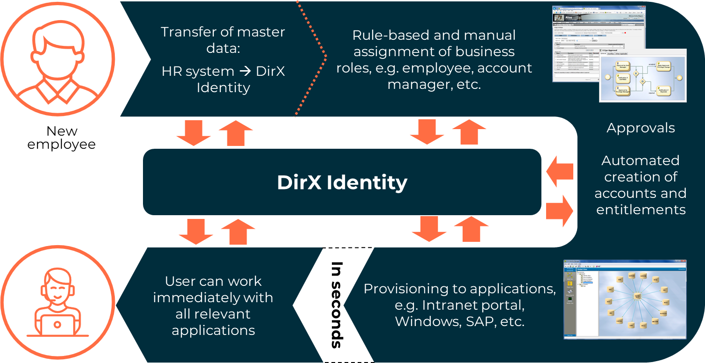
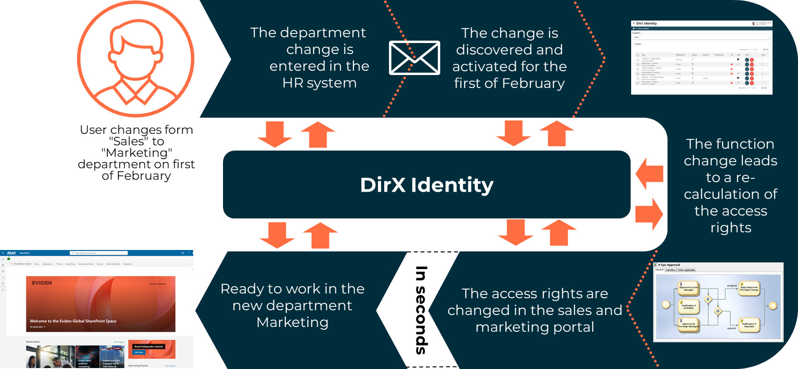
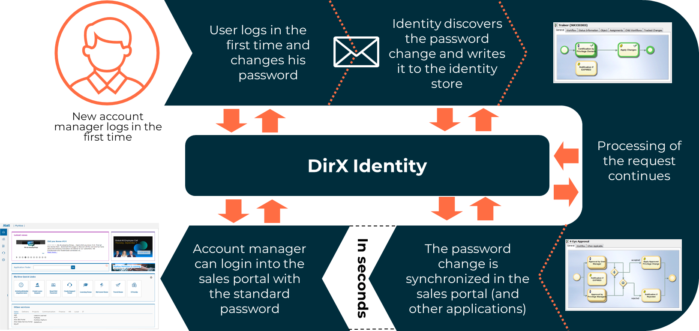
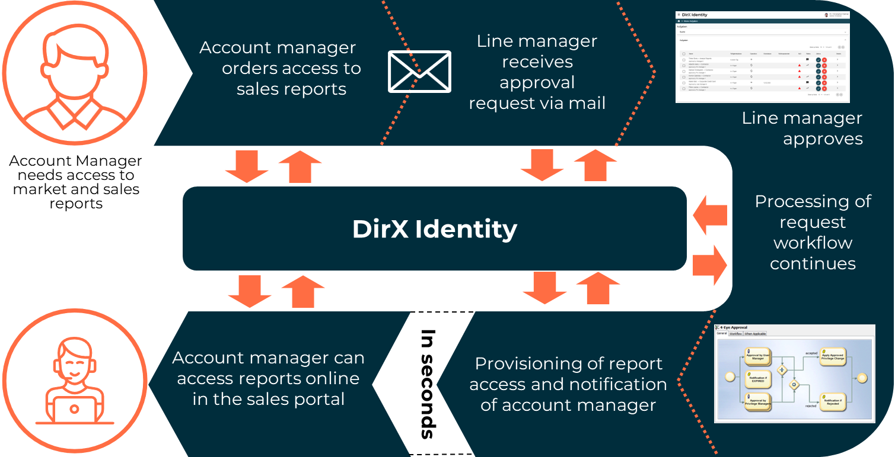
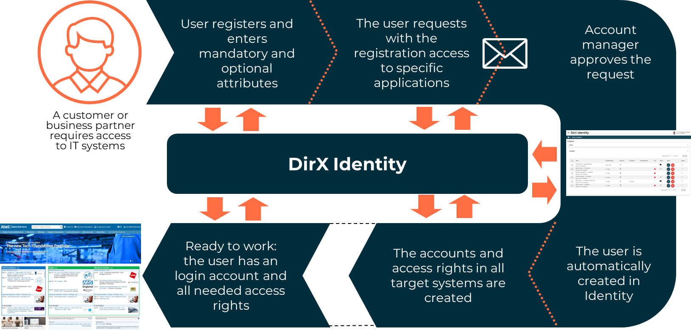
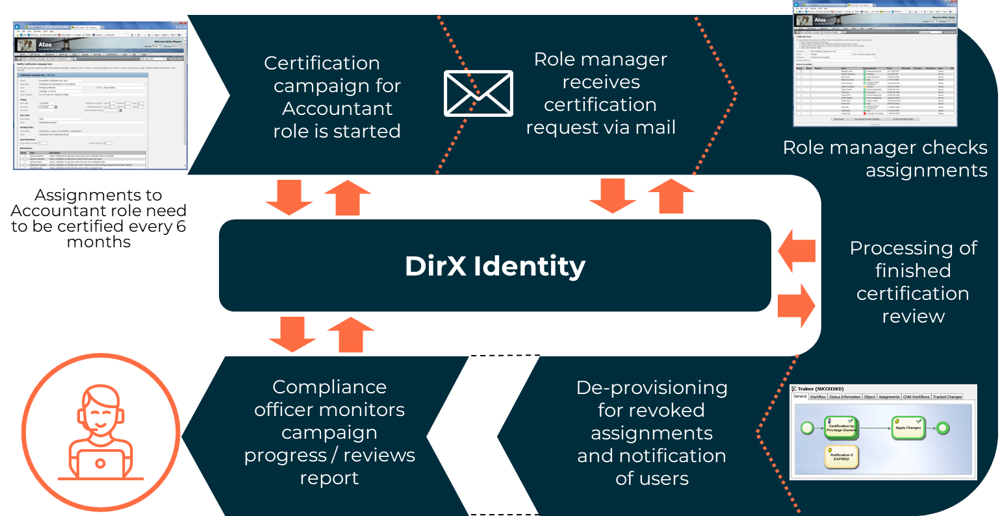
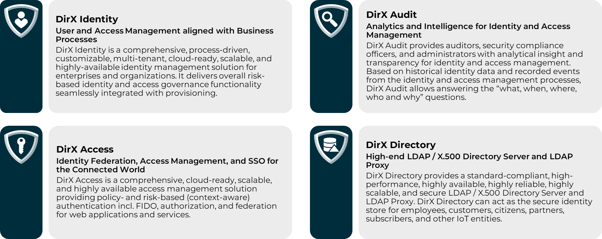
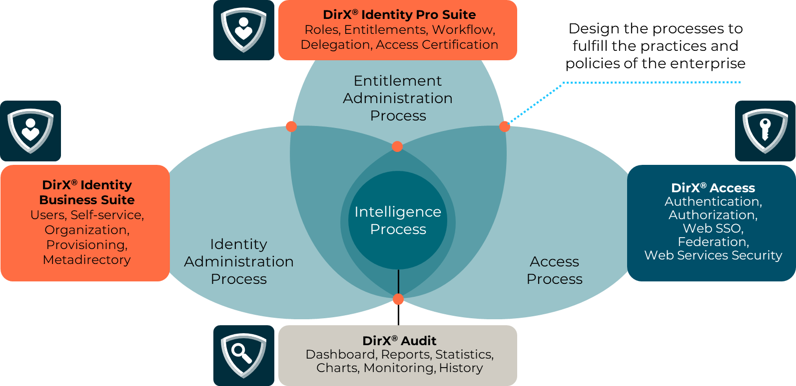

Challenge_502300686
[title-text] DirX Identity Knowledge Base : Challenge #
Created by Gary Weissenbacher, last modified on Jul 02, 2024
[RH_PD_TOC_BK .confluence-anchor-link]#The Challenge of User and Access Management
Today’s business environment is a challenging one for user and access management in the enterprise. Business relationships are growing more complex, blurring the line between internal and external business processes. They are also more dynamic, requiring greater flexibility and responsiveness in the enterprise’s business practices, policies and processes. Companies are under pressure to open their IT infrastructure to an ever-increasing number of users, both inside and outside the company, and to ensure the highest productivity and privacy for these users, all while controlling IT administrative costs and leveraging existing investments wherever possible. To this end, companies are increasingly looking to external cloud services as a way to complement their on-premise IT services and address time-to-market and cost containment concerns. Now more than ever, granting the right people the right access to the right resources at the right time for the right reasons is an essential element of enterprise security as companies strive to protect their corporate data and systems and remain innovative, productive, responsive, compliant and cost-effective business entities.
Several key business objectives are driving governance over the user and access lifecycle on the enterprise IT network:
Regulatory compliance. Secure user access to corporate information has become a major legal issue for business as governments worldwide continue to pass laws intended to ensure the security, privacy, and integrity of sensitive data like consumer and financial records. Domestic and international regulations for financial services, healthcare organizations, pharmaceutical companies and other industries require a secure access control infrastructure, and non-compliance can result in legal action against the enterprise, resulting in heavy financial penalties, even criminal proceedings. The more global a company’s reach, the more complex the requirements for regulatory compliance can be and the greater the cost of failure. To prove compliance, companies must be able to show "who did what, and when, with what information", which requires a single view of a user’s access rights to all IT systems, a way to track this access automatically on an on-going basis - identity-based audit - and a way to archive this information securely for long-term access and analysis.
The move to e-business. The use of the Internet to provide content and business processes to employees, subscribers, customers, and trading partners is now an essential tool for increasing user productivity and streamlining business-to-business collaboration. Companies are offering Web portals and services for everything from personalized employee access to company information to B2B access to supply chain management processes. As a result, more and more enterprise IT applications and content are going online, and access to these applications and content is required by a larger and more varied set of users. And, while consuming the services made available by cloud providers can off-load the need to provide them on premises, it also issues new challenges to maintaining security governance, managing risk, demonstrating accountability and proving regulatory compliance.
Fast and flexible change management. User and access management need to be flexible and responsive to dynamic changes in user populations and business processes brought about by mergers, acquisitions, and the move to e-business. To maximize productivity and guard against security risks, companies must be able to react in real time to changes in their users and the access rights these users need to do their jobs. New users and users changing job functions must immediately get the access rights they need to be up and running quickly, while departing users must have their access rights revoked immediately to close security holes. The governance of users and their access rights must remain consistent and effective across the ever-changing business and user landscape.
Improved information security. Although e-business fosters productivity, personalization, and collaboration, it also exposes the corporate infrastructure to greater security threats from malicious users. To combat this problem, companies need to clearly define corporate security policies - "who is allowed to access what information, and how" - and consistently enforce them across the heterogeneous systems in the enterprise IT infrastructure. This task becomes even a bigger challenge when cloud services are used.
Cost control. Companies need to control or reduce costs to keep competitive, and they are increasingly focusing on IT as an area for cost-cutting. Companies are looking for ways to minimize the number of calls made to their help desks and hotlines for things like forgotten passwords, and they are looking to reduce the administrative costs associated with user management and provisioning - the process that makes the enterprise’s IT resources available to its users. Corporate budgets are cutting investment in IT systems as companies seek to get better returns on the IT systems they already have. Companies also need transparency into the assets they provide to their users and the costs associated with these assets. Service providers need to track the costs associated with users such as disk usage, mailbox size, application packages used and base remote access fees, while sales organizations need to track the costs of mobile phones, laptops, pagers, and PDAs and retrieve these assets from their users when they leave the organization.
The obstacle to realizing these business objectives is the one function-one system structure of the typical enterprise IT network. In the conventional IT infrastructure used in most big companies today, there is a one-to-one correspondence between a function or resource available to users and the IT application/system that provides that function. Consequently, user management, access management, password management and auditing are carried out on a per-IT system basis. IT staff must administer users and their access rights on each IT system in the network or in the cloud, usually by manual administration. Users get one account and one password for each IT system they need to use. Each IT system has its own audit or monitoring function to track changes to users and their access rights on that system.
This structure has negative consequences for user and access management:
-
Decentralized user management and provisioning means that user and access data is duplicated across IT systems and usually becomes inconsistent over time, making it difficult to find correct and up-to-date information and to de-provision users.
-
Decentralized auditing and monitoring makes it difficult to track changes to users and their access rights. There is no way to tell what a single user’s total access rights are across the enterprise - even his account names are different for each IT system he uses - making it very hard to audit for regulatory purposes.
-
One password per IT application means that users must remember a lot of different passwords, one for each system they need to use. Password proliferation leads to more help desk and hotline calls, lost productivity as users wait for password reset, and increased IT administration costs.
-
Manual administration is expensive and error-prone and leads to delays in provisioning and de-provisioning users, which decreases productivity, jeopardizes security and compliance, and introduces data inconsistencies.
-
Security administration on a per IT system basis means that access policies are designed from the bottom up instead of being modeled according to business practices and processes. Decentralized, ad hoc security policies make it difficult to assign the right access to the right users given their function in the organization, increasing risk, decreasing productivity, and making it hard to prove compliance with enterprise security policies and external regulations on access.
To address the key business drivers and overcome the present limitations requires an enterprise-wide, cross-platform, centralized and automated user management, provisioning and access management system that governs access to IT resources according to business roles, policies and processes. The system must provide ways to be aligned with business processes and off-load routine administrative functions and decisions from IT staff to users and their managers so that requests and decisions about what users really need are made by the people who know best. Identity and access management (IAM) technology offers an effective way to satisfy these requirements.
What Is Identity and Access Management?
Identity and access management (IAM) provides for a process-driven, centralized, automated, and integrated solution, making user and access management transparent across the different systems in the enterprise’s IT infrastructure. Identity management processes address the administration of users and their access rights across the IT infrastructure according to business principles, practices, policies and processes. Access management processes address the real-time enforcement of user access to the systems, services, and applications that make up the enterprise IT infrastructure according to their established access rights. Audit processes running outside of the IAM process stream address the need to record, review, analyze and report on the IAM processes themselves to mitigate risk, demonstrate accountability, prove compliance and provide feedback for corporate decision-making on IAM design and performance.
Identity Management
Identity management processes work to align enterprise business interests with lower-level IT operations for user management and provisioning. Identity governance functions provide a high-level, transparent way to define, create, manage, assign, review and remove users (who are represented in the IAM system as digital identities) and their access rights to resources according to business security objectives and compliance requirements. Identity provisioning functions dynamically and automatically realize the results of identity governance operations into the necessary entitlements (for example, accounts and groups) in the systems, applications, and services that make up the enterprise IT infrastructure.
Identity governance and provisioning processes include user self-service and delegated administration, password management, user management, role, policy and business object management, request workflow, certification campaigns, real-time provisioning and reconciliation and metadirectory.
User Self-Service
User self-service allows users to perform simple user-oriented identity management tasks that must typically be carried out by technical IT administrators in the traditional enterprise IT infrastructure. With self-service, users can register themselves with enterprise services, manage their own data, including their own passwords, and request roles, which model user access rights to enterprise resources for themselves. User self-service allows the enterprise to put common, frequently recurring identity management tasks like password resets and user profile updates into the hands of the users themselves, rather than IT, hotline, and help desk staff.
Delegated Administration
Delegated administration allows users to grant other users the right to perform their identity management tasks (or a subset of these tasks). Delegation allows an enterprise to distribute identity management tasks according to business functions and to create a hierarchy for identity management that reflects its business structure. The enterprise can use delegated administration to balance the user management and access rights administration load across both IT and non-IT departments according to areas of responsibility and expertise.
Password Management
Password management allows users to maintain a single password that will automatically be synchronized to all relevant IT systems in the enterprise. Password management functions permit users to reset forgotten passwords themselves through challenge-response procedures (or request an administrator reset), change their passwords in one or more systems, for example, in an LDAP directory or in Windows, notify users when they need to change their passwords to comply with password policies established for the enterprise (for example, expiration of a password’s lifetime), and synchronize these password changes in real time to all the relevant IT systems.
User Management
User management includes all the activities related to the creation, maintenance and use of user accounts, user attributes, roles, entitlements and other data encompassing the different directories, user databases, and application-specific repositories that make up the fragmented, heterogeneous enterprise IT environment. User management consists of two main tasks: maintaining an accurate and up-to-date directory of users to be provisioned and assigning users to roles. Maintaining a consistent user directory is handled by request processes from the users themselves and/or their managers (user self-service and delegated administration) and by data synchronization workflows (for example, with the enterprise HR system) provided by the metadirectory. User facets, personas and functional users extend the user for alternative representations of users and assigned resources.
Role Management
A role is a set of access rights based on either business semantics or on IT-system specific semantics that permits users to access enterprise IT resources. In a role-based access control (RBAC) model, access rights to IT systems and resources are controlled by roles, which in turn are associated with or assigned to users. The enterprise can structure its roles in a hierarchical model according to its business roles and functions or other considerations. The role concept establishes a logical layer for the modeling and management of access control information that is generic enough to cover many IT systems' access control methods, such as:
-
Group-based IT systems, which control access rights via account membership in groups. Making an account a member of a group gives it the access rights that have been granted to the group. User groups, profiles, and application-specific roles are examples of group-based methods of access control.
-
Attribute-based IT systems, which control access rights via attributes in the accounts. For example, in Active Directory, a set of account attributes defines a user’s mailbox; there is no concept of group membership.
-
Systems that use both group-based and attribute-based access control methods, like Microsoft Active Directory.
Role-based access management allows access control on each IT system to be managed in a uniform way. Role management also simplifies and structures access rights administration. High-level managers can assign roles to their staff without needing to know the IT-specific details, and IT personnel can administer the access rights in the IT systems without needing to know the business details. The assignment of roles to users can be partially automated with the help of security policies and their associated rules.
Certification Campaigns
A certification campaign is the identity governance process of periodically checking user-privilege and privilege-user assignments to ensure that these assignments continue to comply with enterprise business policies. Certification campaigns specify the privileges or users and assignments to be certified, how often the certification is to take place, and who is to perform the certification. Compliance officers can monitor the certification campaign’s progress and generate reports on the completed campaign. Certification campaigns allow the enterprise to verify that access rights to its IT systems - especially security-sensitive systems - remain properly granted to its user community over time, satisfying compliance regulations and mitigating risk.
Business Object Management
A business object is a collection of data related to a business structure in the enterprise such as an organization, a cost center or a project. Business objects in an identity management system serve two main functions:
-
They help to automate user-role assignment by allowing the roles referenced by the business object to be inherited by the users linked to it.
-
They help to reduce redundancy of user data in the identity store by providing a single point of control for common user data. For example, an organization’s street address and postal code can be kept in a business object and associated with all users linked to it.
Changes to the information in the business object – including references to roles – are automatically propagated to the users linked to the business object.
Business objects offer a way to view identities from different perspectives: for example, all people in a particular location, all members of a specific organizational unit, or all people that belong to a particular cost center. Because business objects locate data centrally instead of at individual user entries, they allow for easier data cleansing and maintenance. Finally, automatic user-role assignment via links to business objects has become a popular method for role assignment.
Policy Management
Policy management refers to the creation and maintenance of policies that reflect the enterprise’s security and administrative policies and their associated rules and which help to govern, automate and control identity management processes. A policy is composed of one or more rules; each rule identifies the entities - for example, a set of users, or a set of resources - to which the rule applies, the action to be taken, such as assigning one or more roles, and a priority level that is used to resolve conflicts with other rules. Policies can be applied to governance-level functions such as password creation and maintenance, role assignment, and segregation of duties (user-role assignments that constitute conflicts of interest), to provisioning-level functions like user data consolidation and reconciliation (periodic comparison of IT system data and its representation in the IAM system) and to audit-level functions to control how identities and their access rights are monitored. Policies help to control and automate identity management tasks, reducing error-prone manual administration and help to guarantee compliance with internal and external regulations.
Request Workflow and Approval
Request workflows provide the process control mechanism that supports user self-service and delegated administration activities. Request workflows allow users to create identity management data like users or roles, request or assign resources, such as access to a company newsletter or a file share, and optionally authorize these requests according to the access policies in force in the enterprise. When a request needs approval, the request workflow notifies each person in the defined approval path - for example, by email - and each approver uses a Web browser to access a Web interface to accept or reject the request. When access policies require re-authorization of a resource at a given interval, for example, quarterly re-approval of a financially sensitive role assignment, request workflows automatically enforce compliance by re-notifying the appropriate approvers; failure to re-approve leads to automatic unassignment. Request workflows allow the enterprise to handle all of the business processes associated with identity management in a well-defined, controlled and automated way.
Provisioning
Provisioning is the fully automated, real-time process of calculating user access rights and distributing them to IT systems based on the roles assigned to the user. The provisioning process automatically and instantaneously grants, changes, and revokes access rights in IT systems in response to role assignment, re-assignment, and revocation. Provisioning automates the time-consuming process of managing access rights across many different IT systems over the user life-cycle and permits fast activation and de-activation of access rights across these systems for multiple user identities.
Provisioning provides a single point of administration for the enterprise’s total identity and access control information and implements the services that keep the identity and access control data in the IT systems consistent and up-to-date, allowing the enterprise to ensure the security of its data, reduce administration overhead, accelerate its business processes and improve its customer service, and protect its investments in existing IT systems.
Reconciliation
Reconciliation is the process of periodically comparing the access rights data in an IT system to the IAM system’s central repository - its identity store - to detect local changes to the IT system data that have occurred independently of changes initiated by the IAM system. Deviations can be explicitly reconciled by hand or automatically and periodically by reconciliation policies. Reconciliation ensures the integrity of access rights data across the enterprise, a key element of compliance.
Metadirectory
Metadirectory is the set of services that integrates the disparate directories, user databases, and application-specific information repositories in the enterprise IT network into a centralized data store and provides the connectivity, management and interoperability functions that unify the user data ("join") and ensure the bidirectional attribute flow (synchronization) in this fragmented environment.
In an IAM system, the metadirectory provides an infrastructure for automated enterprise-wide user management that addresses the problem of decentralized multiple user identities and user administration functions. Metadirectory services:
-
Integrate user data from multiple authoritative sources - human resources directories, enterprise resource planning (ERP) systems, customer relation management (CRM) and Supply Chain Management (SCM) databases - into a single, unique digital identity that represents the user to be provisioned in the IT systems
-
Maintain an accurate and up-to-date identity store of these identities and synchronize identity data from the identity store back into the authoritative sources
Access Management
Access management processes control the real-time access by user identities to systems, services, and applications in the IT infrastructure according to the entitlements established for them by IM processes. Access management processes include authentication, authorization and federation.
Authentication
Authentication is the process of identifying users and validating their identity. Various authentication methods can be used, including basic authentication using username/password, secure tokens, digital certificates and smart cards. Authentication ensures that users are properly identified and that these identities are validated to the enterprise’s resources. Single sign-on (SSO) permits a user to access multiple IT systems and applications after being authenticated just one time. Web SSO uses encrypted cookies to store user authentication and session information, which permits users to access enterprise resources over Web-based applications without the need to re-authenticate.
Authorization
Authorization is the real-time enforcement of user access requests to the enterprise resources. Authorization ensures that users can only access the IT systems in the enterprise and the corresponding resources according to their access rights. Access decisions can be based on centralized access control policies.
Federation
Identity federation permits an enterprise to share trusted identities with autonomous organizations outside of the enterprise, like trading partners or suppliers. The goal of federation is to integrate identity information across enterprise boundaries to allow the enterprise to build business communities.
Audit and Compliance
Audit is an identity and access "intelligence" process that provides a window into IAM process functioning and complements the real-time monitoring and reporting capabilities provided by the IAM processes themselves. Audit functions include:
-
Automatically logging information about all identity and access management transactions and storing these records, called audit trails, securely in an audit log repository for subsequent analysis and report.
-
Generating reports, either automatically or on demand, about the status of identity management data in the identity store
An identity-based audit trail automatically collects information about all user and role transactions, and can provide information about who has access to what, when access to something was granted, who granted that access, and which policy permitted it. An access-based audit trail automatically collects information from all enforcement points in the access management process, and can provide information about which operations were performed by administrators and identities, which events have occurred, and which operations succeeded or failed. Status reports provide information about the current state of identity management data, for example, which users have which roles, which roles are unused, and which users have been given delegated administrative tasks.
Audit ensures that the activities associated with identity and access management are logged for day-to-day monitoring, to prove regulatory compliance, and for input to corporate decision-making and continuous improvement processes.
How Does IAM Work?
Here are some real-life user and access management scenarios that illustrate how IAM works. We’ll discuss how to use IAM to:
-
Make a new employee productive quickly
-
Change an employee’s job function
-
Change a user password
-
Authorize a request
-
Self-register for services
-
Certify assignments to a role
Making a New Employee Productive Quickly
This example shows how the IAM system works when a new employee is hired, as illustrated in the following figure.

As shown in the figure:
-
The ERP system generates the master data for the employee from the human resources database or the order processing system (the authoritative sources) and automatically synchronizes it to the IAM system’s identity store, creating a centralized unique digital identity for the employee.
-
The IAM system automatically assigns the appropriate roles to the employee’s entry following the security policies administered in the identity store.
-
The IAM system automatically calculates the access rights for the employee that result from the roles assigned to him.
-
An administrator enters individual data about the employee, such his employment start date, into the employee’s entry in the identity store.
-
IAM provisioning processes automatically generate accounts and access rights in the intranet and extranet access servers, email servers, and the other IT resources assigned to the employee.
-
IAM provisioning processes set the employee’s access rights in the central access management system which protects the enterprise portals he will use.
The employee now has the access rights defined in the roles assigned to him and is ready to work productively.
Changing an Employee’s Job Function
In this scenario, an employee is switching from the Sales department to the Marketing department effective February 1st. He is currently authorized to perform sales activities in the sales portal, but will need to use the marketing portal as of February 1st. The following figure illustrates how the IAM system handles the access rights changes required.

As shown in the figure:
-
The Human Resources department enters the change in department and the effective date of the change into the HR system and provisions the changes to the IAM system via "department" and "start date" user attributes.
-
The IAM system records the departmental change in the entry for the employee in the identity store (in the "department" user attribute) and automatically recalculates the employee’s access rights based on the new value.
-
The IAM system revokes the access rights associated with the role "Sales".
-
The IAM system calculates the access rights associated with the "Marketing" role.
-
The IAM system synchronizes the "Marketing" access rights on the Sales and Marketing portals.
The Marketing Portal is made available to the employee, and the Sales Portal is no longer accessible to the employee.
Changing a User Password
This example illustrates what happens in the IAM system when a password that can be used for several applications is changed.

As shown in the figure:
-
A user changes his password on his first login to a Windows system.
-
The IAM system discovers the password change, saves the password securely in the entry for the employee in the identity store, and records this operation in the audit store.
-
The IAM system synchronizes the changed password on the Employee Portal and records this operation in the audit store.
-
The changed password is available to authenticate against the Employee Portal.
Approving a Request
In this example, a sales employee needs access to an analyst report, and this access must be approved. The following figure illustrates how the IAM system handles this case using a request workflow.

As shown in the figure:
-
The Sales employee submits a request for the analyst reports.
-
The IAM system runs a request workflow that handles the approval process and automatically forwards the request to Sales management.
-
Once Sales management has approved the request, the IAM system synchronizes the changes in access rights in the Sales portal.
-
The IAM system informs the Sales employee via email that access to the analyst report has been granted.
-
The employee then obtains the analyst report from the Sales Portal.
Self-Registering for Services
In this example, an outside consultant who works for the Marketing department needs access to the Marketing portal and requests that he be registered as a new Marketing user via the Internet.

As shown in the figure:
-
The consultant uses his Web browser to go to the URL of the company’s Web-based user self-registration interface and clicks "Register". The IAM system automatically starts a user creation workflow, which displays a registration page that requests more information.
-
The consultant fills out the Web site’s registration page with his name, his company’s name and address, and other required and optional attributes, and then clicks "Save".
-
The Web interface presents the consultant with a selection of job-related roles from which he can choose. The consultant chooses the "New Marketing Info" and "Download Marketing Material" roles and then clicks "Save".
-
Because the "Download Marketing Material" role requires approval from the Marketing Download manager, the user creation workflow automatically notifies the manager about the request and asks him to accept or reject it.
-
Once the manager approves the request, the IAM system automatically calculates the consultant’s access rights based on the information he supplied in the registration page and the roles he requested.
-
The IAM system immediately provisions accounts and access rights in the relevant IT systems.
-
The IAM system automatically notifies the consultant via email that he is now a registered Marketing user.
The consultant can now access the requested resources defined in the roles assigned to him and is ready to work productively.
Certifying a User’s Assignments
In this example, compliance requirements dictate that privilege assignments to users in the Finance department must be certified by the users' managers.

As shown in the figure:
-
A compliance officer sets up a certification campaign for the Finance department to start at the beginning of next month and finish at the end of the next month.
-
When the start date arrives, the IAM system starts the certification campaign. It creates a certification task for every user in the department, identifies all privileges to be certified, assigns the user’s manager as the responsible approver and informs them via email.
-
The user manager verifies - sometimes by consulting role managers, human resources representatives, and other people in the organization - that the user’s assignment to each privilege complies with the business policies given the user’s function in the organization. If the user-privilege assignment complies with regulations, the user manager indicates to the IAM system that the assignment should remain in force. If it does not comply, he indicates to the IAM system that the assignment should be removed.
-
At the end of the campaign, the IAM system processes the results of the certification review. It revokes the access rights that were rejected by the approvers, and then informs the affected users about the change.
-
The compliance officer uses the IAM system to monitor the certification campaign and generate a report on the results.
What is DirX?
Atos’ DirX suite of highly scalable and automated IAM solutions allow customers to choose from on-premise, managed and cloud-based delivery models and to benefit from enhanced regulatory compliance and audit capabilities, greater security, higher efficiency and reduced overall costs. The DirX portfolio ranges from identity management and access governance, identity analytics and intelligence to Web access management and single sign-on, authorization, identity federation, and directory services. Analysts recognize Atos as a world leader in role management and SAP integration.

With the DirX product family an integrated product suite for identity and access management solutions is provided, which consists of
-
DirX Identity, a comprehensive identity management and governance solution
-
DirX Directory, the standards-compliant LDAP / X.500 directory server and LDAP Proxy
-
DirX Audit, providing analytical insight and transparency in the identity and access management processes
-
DirX Access, a policy-based Web access management, Web single sign-on, Authorization, and federation product.
The DirX products provide full coverage of the four core IAM processes
-
Identity Administration Process
The DirX Identity Business Suite delivers lifecycle management of users and organizational data, administrative and self-service management interfaces, metadirectory and provisioning capabilities. -
Entitlement Administration Process
The DirX Identity Pro Suite includes all the features of the Business Suite plus lifecycle management of roles and entitlements, request and approval workflows, delegated administration and access certification. -
Access Process
DirX Access protects access to resources by providing central security services for authentication, authorization, single sign on, identity federation, and Web services security. -
Intelligence Process
DirX Audit delivers analytical insight and transparency in the identity and access management processes.

The rest of this document describes DirX Identity features, functions, and components. See the user documentation for DirX Audit, DirX Directory and DirX Access for detailed information about these products.